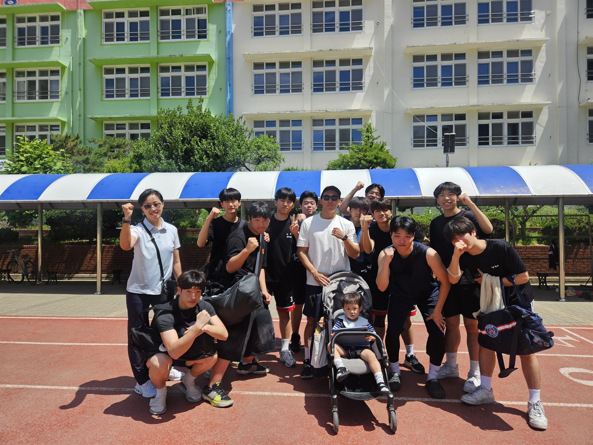
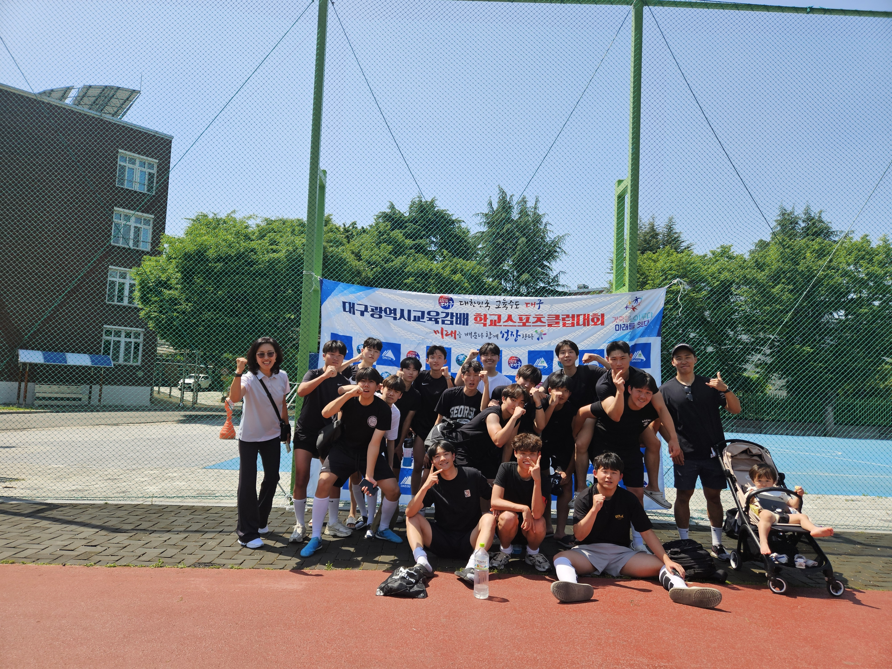
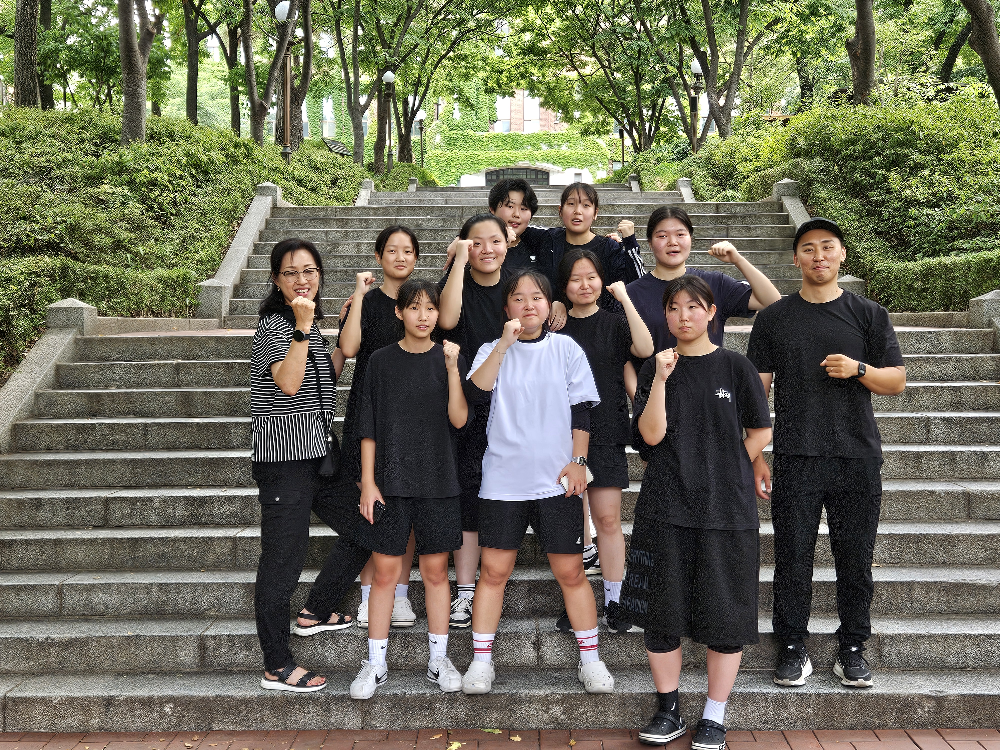

일본의 학교 스포츠클럽,
부카츠
메이저리그 스타 오타니 쇼헤이의 반듯한 매너는 어디서 왔을까요? 많은 이들이 그 뿌리로 일본의 학교 문화 '부카츠(部活)'를 꼽습니다. 학생 대부분이 거쳐가는 이 활동은 어떤 모습일까요?
부카츠란 무엇인가
부카츠는 정규 수업 외에 이뤄지는 학교 동아리 활동입니다. 참여율이 놀라운데, 일본 중학생의 약 85%, 고교생의 약 70%가 참여하며 주당 약 15시간을 쏟습니다. 사실상 학교생활의 핵심 축인 셈입니다.
운동부만 있는 게 아니다
- 체육 계열 — 야구·농구·배구 등 우리가 흔히 떠올리는 운동부입니다.
- 문화 계열 — 관악·밴드·연극처럼 예술 활동을 하는 동아리도 있습니다.
- 특색 있는 부 — 소바를 만드는 '소바부', 유리공예를 하는 '글라스아트부'처럼 독특한 동아리도 존재합니다.
참여자의 약 90%는 취미로 활동하고, 전문 코치의 지도를 받는 경우는 10% 정도입니다. 즉 부카츠의 본질은 엘리트 육성이 아니라 모두를 위한 교육 활동에 가깝습니다.
부카츠가 가르치는 것
부카츠의 진짜 가치는 인성 교육에 있다고 평가받습니다. 인내심, 규칙 안에서 경쟁하는 법, 동료와의 협동, 그리고 실패 뒤 다시 일어서는 힘을 배우죠. 오타니 쇼헤이의 성실함과 매너 역시 이런 부카츠 교육의 결과라는 분석이 많습니다.
그늘 — '블랙 부카츠'
빛이 있으면 그늘도 있습니다. 지도를 맡은 교사(고몬)들이 낮은 수당으로 과도한 업무에 시달리는 문제가 '블랙 부카츠'라 불리며 사회 문제가 됐습니다. 이에 일본은 부카츠 운영을 학교에서 지역사회로 이양하는 방향으로 움직이고 있습니다.
한국의 학교스포츠클럽
우리나라도 2012년 학교체육진흥법 제정 이후 학교스포츠클럽이 꾸준히 성장해 왔습니다. 부카츠는 학교 스포츠가 나아갈 방향을 고민할 때 좋은 참고 사례가 됩니다.



📌 3줄 요약
- 부카츠는 일본 학생 대다수가 참여하는 방과후 동아리 활동이다.
- 인내·협동·규칙 안에서의 경쟁을 배우는 인성교육으로 평가받는다.
- 교사 과로 등 '블랙 부카츠' 문제로 운영의 지역사회 이양이 추진된다.
생각해보기 ▸ 학교 스포츠는 '이기기 위한 것'일까요, '함께 성장하기 위한 것'일까요? 그 답에 따라 운영 방식은 어떻게 달라져야 할까요?